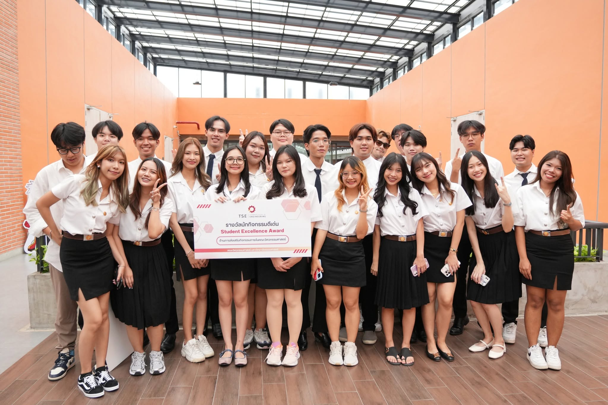
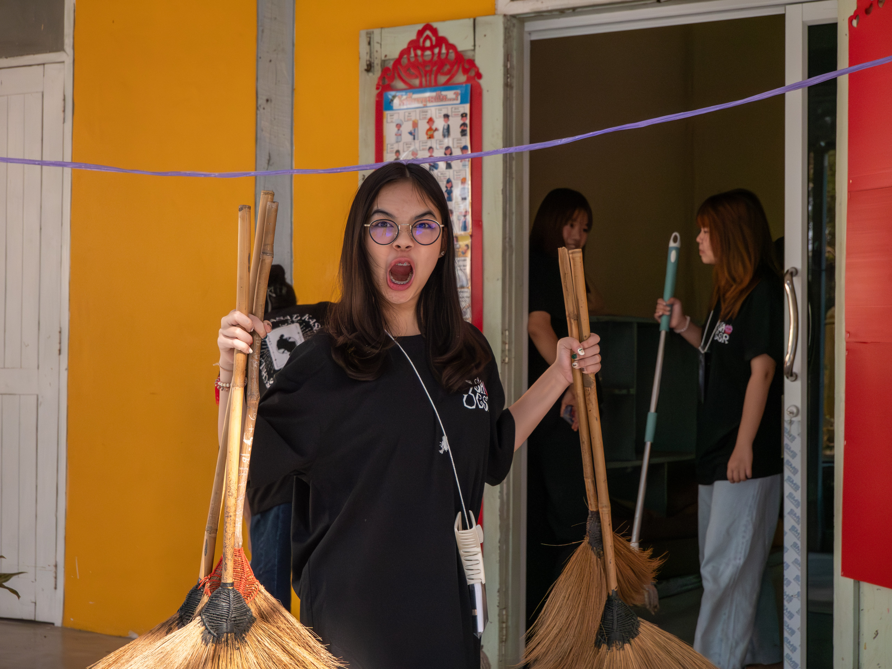
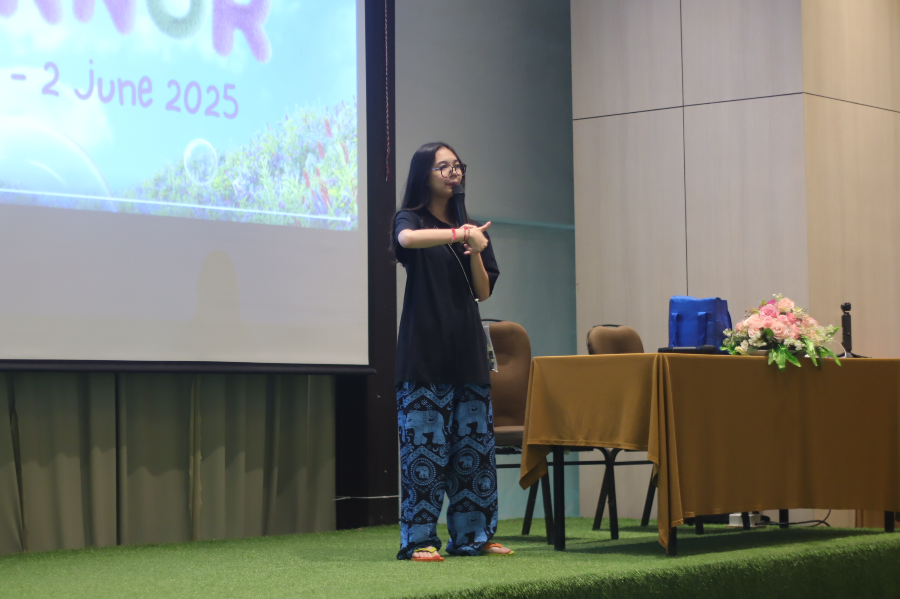
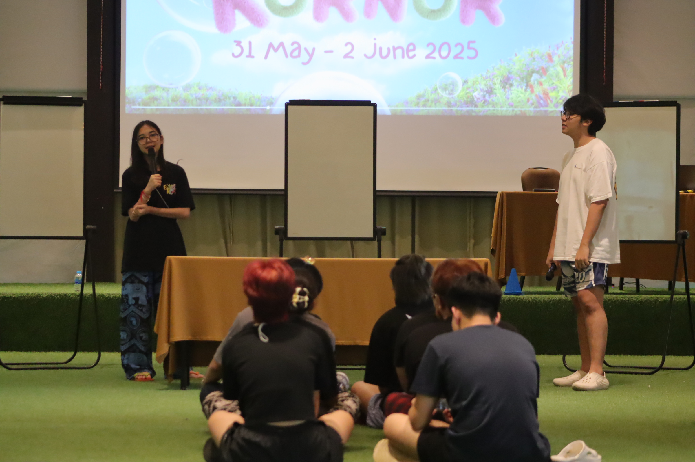
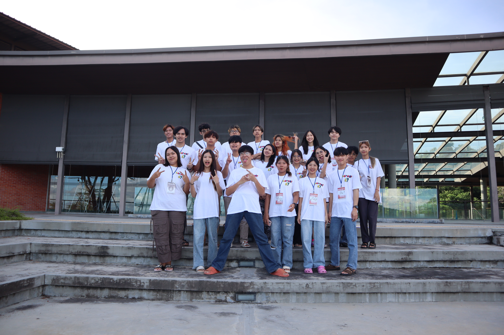
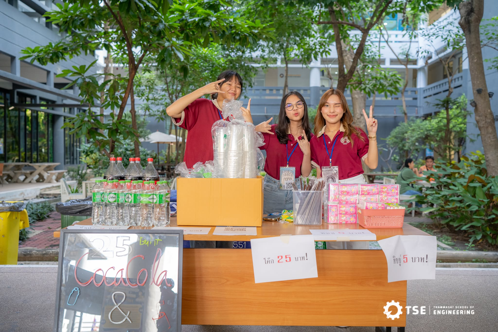
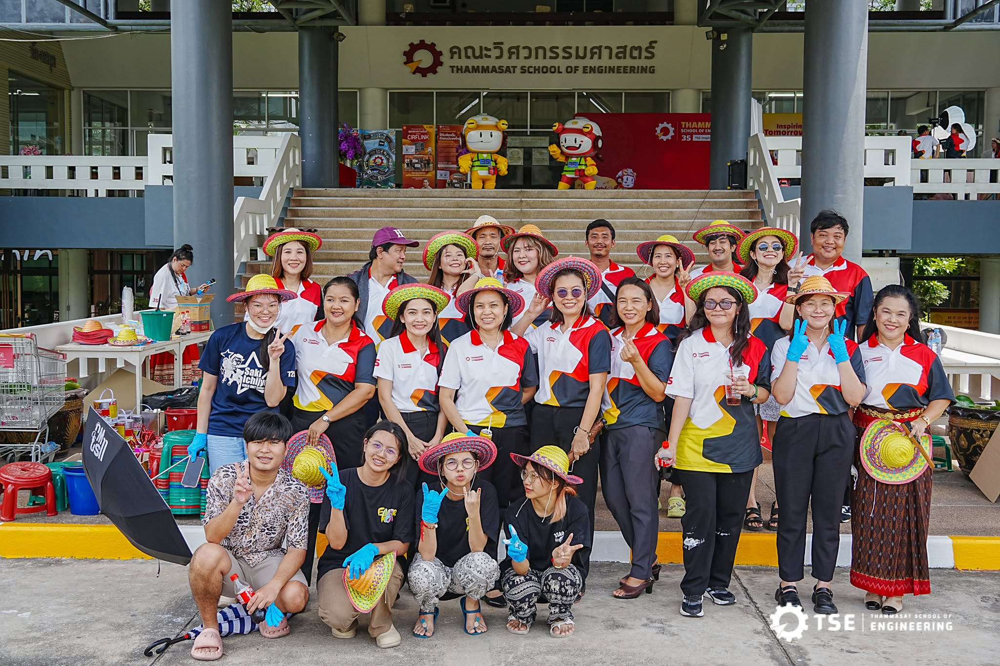

Student Committee Secretary
Thammasat School of Engineering

Overview
Served as Student Committee Secretary at Thammasat School of Engineering, supporting communication between students, faculty members, and external university teams while coordinating faculty activities and managing official documentation.
Responsibilities
- Served as a key point of coordination between students, faculty members, and external university teams.
- Coordinated and supported faculty-wide events and student activities, including orientations, first-meet activities, and engineering faculty events.
- Managed official documents, meeting records, and administrative information for the Student Committee.
- Coordinated tasks, schedules, and follow-ups with committee members to ensure activities were completed as planned.
- Supported on-site event operations and collaborated with multiple teams to resolve issues during activities.
Photos



A CSR collaboration between Chulalongkorn University, Thammasat University, and Kasetsart University
- Coordinated activity planning and execution with student teams from all three universities.
- Contributed to CSR initiatives focused on school improvement and facility renovation.
Part of the Organizing Committee for Byenior TSE33
- Coordinated event logistics and operations with internal organizing teams.
- Liaised with the hotel and external service providers to arrange venue, schedules, and event requirements





An internal seminar organized for the Student Committee of Thammasat School of Engineering. Served as part of the organizing and Activities Team
- Coordinated event arrangements with the hotel and external service providers.
- Planned and coordinated event activities, schedules, and on-site operations with the organizing team.






Supported faculty-wide events such as Open House, Orientation, and other student activities at Thammasat School of Engineering.
- Coordinated with faculty staff to understand event requirements and support needs.
- Worked with the Student Committee team to plan tasks, activities, and event operations based on faculty requirements.
- Supported on-site coordination and helped ensure activities were carried out smoothly.